Operators¶
Introduction¶
The domain of the operator  is
is  , a subspace of the Hilbert space
, a subspace of the Hilbert space
 .
Linear operator is:
.
Linear operator is:
for all 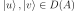. Symmetric operator is:

for all dense in .
If is dense in , then the adjoint operator 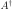 is
defined by
for all . The domain  is given by all
is given by all
 for which the above relation holds. It can be shown that
for which the above relation holds. It can be shown that
 .
.
Operator is self-adjoint if .
Symmetric operator is self-adjoint only if  . (Bounded
symmetric operator is always self-adjoint.)
Hermitean operator is a bounded symmetric operator.
. (Bounded
symmetric operator is always self-adjoint.)
Hermitean operator is a bounded symmetric operator.
Hermitian implies self-adjoint implies symmetric, but all converse implications are false. Below, we need the operator to be self-adjoint (we assume unbounded by default).
Spectrum¶
To obtain a spectrum of the operator , we need to solve the following
problem:

Those values of  for which the solution
belong to the discrete part of the spectrum. are called eigenvalues
and 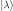 eigenvectors.
Those values of for which can be normalized
to a delta function:
for which the solution
belong to the discrete part of the spectrum. are called eigenvalues
and 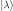 eigenvectors.
Those values of for which can be normalized
to a delta function:

belong to the continuous part of the spectrum (note that in this case ).
Eigenvectors belonging to the continous part of the spectrum obey the completeness relation:
Eigenvectors belonging to the discrete part obey the following completeness relation:
The sum or integral runs over the whole spectrum (if the spectrum contains both discrete and continous part, we simply combine sums and integrals).
Spectrum of a self-adjoint operator is real, because

The eigenvectors are orthogonal:

So for  we get
we get  ,
for
,
for  the is equal to 1 if
belongs to the discrete spectrum and we get:
the is equal to 1 if
belongs to the discrete spectrum and we get:

or it is normalized as a delta function if it belongs to the continous part:
As such, eigenvectors of a self-adjoint operator are complete and orthogonal in the above sense. Thus any function from the space can then be expanded into the series:

where  are the eigenvectors and the
coefficients
are the eigenvectors and the
coefficients  are given by:
are given by:
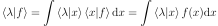
The sum over runs over the whole spectrum (i.e. it becomes an
integral over the continuos parts). Also the coefficients
are either discrete or continous depending on the part of the spectrum.
The series converges in the norm, i.e. the following norm goes to zero as we
sum over :
Derivative Operator¶
We have the eigenvalue problem
where
The operator is unbounded.
is self-adjoint if:

So
![\int_a^b u^*(x) A v(x) \d x
= \int_a^b u^*(x) \left(-i {\d \over \d x}\right) v(x) \d x =
= \int_a^b \left(i {\d \over \d x} u^*(x) \right) v(x) \d x
-i[u^*(x) v(x)]^b_a =
= \int_a^b \left(-i {\d \over \d x} u(x) \right)^* v(x) \d x
-i[u^*(x) v(x)]^b_a =
= \int_a^b (A u(x))^* v(x) \d x -i[u^*(x) v(x)]^b_a](../_images/math/1d6834f8afab1f4a986e698cf96a1da794d8ab84.svg)
The operator is self-adjoint if and only if ![[u^*(x) v(x)]^b_a=0](../_images/math/75dd5453369f70687e8fb7e749e5ff4dedd410c2.svg) .
Few boundary conditions that satisfy this condition:
.
Few boundary conditions that satisfy this condition:
- Dirichlet boundary conditions

- Periodic boundary conditions
- Antiperiodic boundary conditions
Solving the eigenproblem:
Fourier Series¶
We restrict our space to periodic functions. Applying the periodic boundary condition:
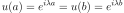
so
The normalized eigenvectors are:
These eigenvectors belong to our space and as such all form a discrete spectrum. Other solutions do not satisfy the periodic boundary condition and so there is no continous part in the spectrum.
The eigenvectors must be orthogonal, as we can check:
![\int_a^b u_n^*(x) u_m(x) \d x =
= \int_a^b
{1\over\sqrt{b-a}} e^{-i {2\pi n\over b-a} x}
{1\over\sqrt{b-a}} e^{i {2\pi m\over b-a} x}
\d x =
= {1\over b-a} \int_a^b
e^{i {2\pi (m-n)\over b-a} x}
\d x =
= \begin{cases}
{1\over b-a} \int_a^b e^{0} \d x & \mbox{for } m = n \\
{1\over i 2\pi (m-n) } \left[e^{i {2\pi (m-n)\over b-a} x}\right]^b_a &
\mbox{for } m \ne n \\
\end{cases} =
= \begin{cases}
1 & \mbox{for } m = n \\
{1\over i 2\pi (m-n) } \left(
e^{i {2\pi (m-n)\over b-a} b}-e^{i {2\pi (m-n)\over b-a} a}\right) &
\mbox{for } m \ne n \\
\end{cases} =
= \begin{cases}
1 & \mbox{for } m = n \\
{e^{i {2\pi (m-n)\over b-a} a}\over i 2\pi (m-n)} \left(
e^{i {2\pi (m-n)\over b-a} (b-a)}-1\right) &
\mbox{for } m \ne n \\
\end{cases} =
= \begin{cases}
1 & \mbox{for } m = n \\
0 & \mbox{for } m \ne n \\
\end{cases} =
\delta_{mn}](../_images/math/d43d41b5cd0673ce2a5df8a4687cc7b342f5bbcb.svg)
The eigenvectors must be complete:
Any function  can then be expanded on the interval into the
Fourier series:
can then be expanded on the interval into the
Fourier series:
Equivalently, this can be written using and directly:
By introducing the coefficients  and
and  :
:
we can write the series as:
we get:

Conceptually, we are taking the complex orthonormal basis
and creating
a real orthonormal basis 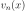 composed of
,  , , …,
, , …,  ,
,  , … as follows:
, … as follows:

We are only summing over the positive arguments in and , thus the
absolute value for  . The basis
. The basis  is orthonormal:
is orthonormal:

and complete:
This is not the only way to create the real orthonormal basis. In general:
We require the new basis  to be orthonormal:
to be orthonormal:

This restricts the  matrices to be unitary (),
because:
matrices to be unitary (),
because:
The unitarity condition also makes sure, that the real basis is complete:
Requiring to be real and using we get:
Because the basis  is complete. So the only conditions on the matrices
is complete. So the only conditions on the matrices
 are:
are:
They imply that the new basis will be real, orthonormal and complete. Our final restriction is that we want each real basis element to correspond to the same frequency (possible sign change is ok): this means that we can only mix the same frequencies, i.e.:
and also that the nonzero matrix elements can only be of the form
 for
for  (i.e. or for some
positive
(i.e. or for some
positive  ).
).
Up to possible sign changes and permutations, this determines the matrix uniquely. Our choice above is:
In other words, we get (except that the matrix is infinite):
![\begin{pmatrix}
v_3 \\
v_2 \\
v_1 \\
v_0 \\
v_{-1} \\
v_{-2} \\
v_{-3} \\
\end{pmatrix} =
\begin{pmatrix}
{1\over \sqrt 2} & & & & & & {1\over \sqrt2} \\
& {1\over \sqrt 2} & & & & {1\over \sqrt2} & \\
& & {1\over \sqrt 2} & & {1\over \sqrt2} & & \\
& & & 1 & & & \\
& & {1\over i\sqrt 2} & & -{1\over i\sqrt2} & & \\
& {1\over i\sqrt 2} & & & & -{1\over i\sqrt2} & \\
{1\over i\sqrt 2} & & & & & & -{1\over i\sqrt2} \\
\end{pmatrix}
\begin{pmatrix}
u_3 \\
u_2 \\
u_1 \\
u_0 \\
u_{-1} \\
u_{-2} \\
u_{-3} \\
\end{pmatrix}](../_images/math/81d3f8f508d7b0419ddf242ceeb91be88d415cca.svg)
Fourier Transform¶
Our domain is 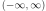, so the solution of the eigen problem is:
The normalized eigenfunctions are:
We calculate the normalization:
So the spectrum is continous. The eigenvectors must be complete:
Any function can then be written as:
where  is called the Fourier transform of :
is called the Fourier transform of :
Note that both for Fourier series and Fourier transform, the sign convention in
the exponentials ( ) follows from choosing the sign in and as such it is arbitrary. We can also choose and then the sign will be flipped.
) follows from choosing the sign in and as such it is arbitrary. We can also choose and then the sign will be flipped.
Sturm–Liouville Operator¶
The Sturm-Liouville operator  is:
is:
Everything is real.
The scalar product is weighted by  . The operator is self-adjoint if:
. The operator is self-adjoint if:
so
![\int_a^b u(x) L v(x) w(x) \d x =
= \int_a^b u(x) {1 \over w(x)} \left(-{\d\over \d x}
\left(p(x){\d v(x)\over dx}\right) +q(x) v(x) \right)
w(x) \d x =
= \int_a^b \left(-u(x) {\d\over \d x}
\left(p(x){\d v(x)\over dx}\right) + u(x) q(x) v(x) \right)
\d x =
= \int_a^b \left({\d u(x)\over\d x} p(x){\d v(x)\over dx}
+ u(x) q(x) v(x) \right) \d x
-\left[u(x)p(x){\d v(x)\over dx}\right]^b_a
=
= \int_a^b \left(-{\d\over \d x} \left(p(x) {\d u(x)\over\d x}\right) v(x)
+ u(x) q(x) v(x) \right) \d x
-\left[u(x)p(x){\d v(x)\over dx}-{\d u(x)\over dx}p(x)v(x)\right]^b_a
=
= \int_a^b \left(L u(x)\right) v(x) w(x) \d x
-\left[u(x)p(x){\d v(x)\over dx}-{\d u(x)\over dx}p(x)v(x)\right]^b_a](../_images/math/476fd95f5c1d490684e36d02e5d6190354ac1e8e.svg)
And the operator is self-adjoint if and only if:
This condition can be satisfied by various boundary conditions. For example:
- Dirichlet boundary conditions
- Neumann boundary conditions
- Periodic boundary conditions
- Antiperiodic boundary conditions
or mixtures of these, e.g. Dirichlet at and Neumann at  .
.
Legendre Polynomials¶
Legendre polynomials 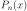 are solutions of the Sturm–Liouville problem on the interval with , , and :

The operator is self-adjoint due to vanishing  at
the endpoints:
at
the endpoints:
We restrict our space to bounded functions. The solutions of the eigenvalue
problem for integer  are Legendre polynomials , the normalized
eigenvectors are:
are Legendre polynomials , the normalized
eigenvectors are:
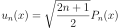
Solutions for non
integer are Legendre functions that are singular at the end points and as
such are not solutions that we want. As such, the spectrum is discrete and the
Legendre polynomials form a complete orthogonal basis for functions
on the interval :
any function on the interval can be expanded as:
Angular Momentum Operator¶
The angular momentum operators  ,
,  and
and  are given by:
are given by:
in spherical coordinates:
and

The eigenproblem is:
(1)¶
Using Condon & Shortley phase convention, it can be shown that:
(2)¶
and by repeated application:
where
The solution of (1) is of the form:
(3)¶
and we get from (1):

on the interval ![[0, 2 \pi]](../_images/math/0bd36cea22964b9418551451c6d6bbe9487ec6d7.svg) with the boundary condition . From
Derivative Operator the eigenvalues are all integer
with the boundary condition . From
Derivative Operator the eigenvalues are all integer  and the normalized eigenvector is:
and the normalized eigenvector is:
(4)¶
Substituting (4) into (3) we get from
(1) an ordinary second order differential equation for
 :
:
![L^2 \ket{lm} = l(l+1) \ket{lm}
- \left( {1\over\sin\theta} \partial_\theta
\left(\sin\theta \ \partial_\theta \right)
+ {1\over \sin^2\theta}\partial_\phi^2\right)
{1\over\sqrt{2\pi}} e^{im\phi} \Theta_{lm}
= l(l+1) {1\over\sqrt{2\pi}} e^{im\phi} \Theta_{lm}
{1\over\sin\theta} {\d\over\d \theta}
\left(\sin\theta {\d\over\d \theta} \Theta_{lm}\right)
+
\left( l(l+1) - {m^2\over \sin^2\theta} \right) \Theta_{lm} = 0
{\d\over\d \cos\theta} \left((1-\cos^2\theta)
{\d\over\d \cos \theta} \Theta_{lm}\right)
+
\left( l(l+1) - {m^2\over 1-\cos^2\theta} \right) \Theta_{lm} = 0
{\d\over\d z} \left((1-z^2) {\d \Theta_{lm}\over\d z}\right)
+ \left(l (l+1) - {m^2\over 1-z^2}\right)\Theta_{lm} = 0](../_images/math/7df7a90bd4d080cc1434c246409db54e68c04219.svg)
where
This equation can be solved using the following approach. From (2) we get:
![(L_1\pm iL_2)Y_{lm}(\theta, \phi)
= (L_1\pm iL_2)\Theta_{lm}(\theta)\Phi_m(\phi) =
= e^{\pm i\phi} \left(\pm \partial_\theta + i \cot\theta \partial_\phi
\right) \Theta_{lm}(\theta) {1\over\sqrt{2\pi}} e^{im\phi} =
= {1\over\sqrt{2\pi}} e^{i(m\pm1)\phi}
\left(\pm {\d\over\d \theta} -m \cot\theta \right) \Theta_{lm}(\theta) =
= \mp {1\over\sqrt{2\pi}} e^{i(m\pm1)\phi}
\left(\sin\theta {\d\over\d \cos \theta} \mp m
{\d\sin\theta\over\d \cos\theta} \right) \Theta_{lm}(\theta) =
= \mp {1\over\sqrt{2\pi}} e^{i(m\pm1)\phi}
\sin^{1\pm m}\theta \left({\d\over\d \cos \theta}
\sin^{\mp m}\theta\ \Theta_{lm}(\theta) \right) =
= \mp \Phi_{m\pm 1}(\phi)
\sin^{1\pm m}\theta \left({\d\over\d \cos \theta}
\sin^{\mp m}\theta\ \Theta_{lm}(\theta) \right)](../_images/math/c32d1ec400a803784102f34f9d8b4e72689f3727.svg)
and by repeated application we get:
from which we obtain:
(5)¶
As a special case for  and we get:
and we get:
(6)¶
and for  and we get (we only use the 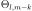 branch):
and we get (we only use the 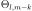 branch):
(7)¶
From (2) we get:
Using (4) this gives us a first order differential equation:
from which
(8)¶
It is normalized as:
We used the value of the integral:
for we obtain:

where
is the Rodrigues’ formula for Legendre polynomials. We substitute into (6) and get:
(9)¶
Hence  .
Using associated Legendre polynomials, we can write:
.
Using associated Legendre polynomials, we can write:
(10)¶
where (for all ):
![P_l^m(\cos \theta)
= (-1)^l {(l+m)!\over (l-m)!} {1\over 2^l l!}
{1\over\sin^m\theta} {\d^{l-m}\over(\d \cos \theta)^{l-m}}
\sin^{2l}\theta =
= {(l+m)!\over (l-m)!} {1\over 2^l l!}
{1\over\sin^m\theta} {\d^{l-m}\over(\d \cos \theta)^{l-m}}
(\cos^2\theta-1)^l =
= (-1)^m {1\over 2^l l!}
{(1-\cos^2)^m\theta\over\sin^m\theta}
{\d^{l+m}\over(\d \cos \theta)^{l+m}}
(\cos^2\theta-1)^l =
= (-1)^m {1\over 2^l l!}
\sin^m\theta {\d^{l+m}\over(\d \cos \theta)^{l+m}}
(\cos^2\theta-1)^l =
= (-1)^m {1\over 2^l l!}
(1-z^2)^{m\over 2} {\d^{l+m}\over \d z^{l+m}} (z^2-1)^l](../_images/math/1477a9ed989a0aec713629596d1fe44bd20ffa1c.svg)
hence (comparing the second and fourth equation above):
(11)¶
This is valid for all (positive or negative).
For we get from (9) and (11):
This is usually used as the definition of the associated Legendre polynomials.
They include the Condon & Shortley phase factor (only for positive
). Some authors omit it (then it needs to be included in the equation
(10)). Note that (10) for can be also written as:
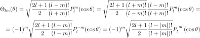
Thanks to
we can write for all :
The normalization of associated Legendre polynomials is:
Finally, we get (for all ):
Any function on the sphere can be expanded as:
Real Spherical Harmonics¶
The most obvious approach is to use a similar way as for Fourier series. We rearrange the sum:
![f(\theta, \phi)
= \sum_{l=0}^\infty \sum_{m=-l}^l Y_{lm}(\theta, \phi)
f_{l m}
= \sum_{l=0}^\infty \sum_{m=-l}^l \Theta_{lm}(\theta, \phi)
{1\over\sqrt {2\pi}} e^{im\phi}
f_{l m} =
= {1\over\sqrt {2\pi}}
\sum_{l=0}^\infty \sum_{m=-l}^l
\left(
\Theta_{lm}(\theta, \phi)
\cos m \phi
f_{l m}
+
\Theta_{lm}(\theta, \phi)
i \sin m \phi
f_{l m} \right) =
= {1\over\sqrt {2\pi}}
\sum_{l=0}^\infty
\left(
\Theta_{l0}(\theta, \phi) f_{l 0}
+
\sum_{m=1}^l \left(
(
\Theta_{lm}(\theta, \phi)
f_{l m}
+
\Theta_{l,-m}(\theta, \phi)
f_{l, -m})
\cos m \phi
+
i(
\Theta_{lm}(\theta, \phi)
f_{l m}
-
\Theta_{l,-m}(\theta, \phi)
f_{l, -m})
\sin m \phi
\right)\right) =
= {1\over\sqrt {2\pi}}
\sum_{l=0}^\infty
\left(
\Theta_{l0}(\theta, \phi) f_{l 0}
+
\sum_{m=1}^l \left(
\Theta_{lm}(\theta, \phi)
( f_{l m} + (-1)^m f_{l, -m}) \cos m \phi
+
\Theta_{lm}(\theta, \phi)
i(f_{lm} - (-1)^m f_{l, -m}) \sin m \phi
\right)\right) =
= {1\over\sqrt {2\pi}}
\sum_{l=0}^\infty
\left(
\Theta_{l0}(\theta, \phi) f_{l 0}
+
\sum_{m=1}^l \left(
\Theta_{lm}(\theta, \phi)
{f_{l m} + (-1)^m f_{l, -m}\over \sqrt 2} \sqrt 2 \cos m \phi
+
\Theta_{lm}(\theta, \phi)
i{ f_{lm} - (-1)^m f_{l, -m}\over \sqrt 2} \sqrt 2 \sin m \phi
\right)\right) =
= {1\over\sqrt {2\pi}}
\sum_{l=0}^\infty
\left(
\Theta_{l0}(\theta, \phi) \tilde f_{l 0}
+
\sum_{m=1}^l \left(
\Theta_{lm}(\theta, \phi)
\tilde f_{l m} \sqrt 2 \cos m \phi
+
\Theta_{lm}(\theta, \phi)
\tilde f_{l, -m} \sqrt 2 \sin m \phi
\right)\right) =
= {1\over\sqrt {2\pi}}
\sum_{l=0}^\infty
\left(
\Theta_{l0}(\theta, \phi) \tilde f_{l 0}
+
\sum_{m=1}^l
\Theta_{lm}(\theta, \phi)
\tilde f_{l m} \sqrt 2 \cos m \phi
+\sum_{m=-l}^{-1}
\Theta_{l|m|}(\theta, \phi)
\tilde f_{lm} \sqrt 2 \sin |m| \phi
\right) =
= \sum_{l=0}^\infty \sum_{m=-l}^l Z_{lm}(\theta, \phi)
\tilde f_{l m}](../_images/math/c29d6c49a2a0e6cbd1e7ad984766da4ccddc9d34.svg)
Where the real spherical harmonics  are:
are:
![Z_{lm}(\theta, \phi) = \begin{cases}
\sqrt{2} {\Theta_{lm}\over\sqrt{2\pi}} \cos m \phi & \mbox{for } m > 0\\
{\Theta_{l0}\over\sqrt{2\pi}} & \mbox{for } m = 0\\
\sqrt{2} {\Theta_{l |m|}\over\sqrt{2\pi}} \sin |m| \phi
& \mbox{for } m < 0\\
\end{cases}
=
\begin{cases}
\sqrt{2} \Re(Y_{lm}(\theta, \phi))\\
Y_{l0}(\theta, \phi) \\
\sqrt{2} \Im(Y_{l |m|}(\theta, \phi))\\
\end{cases}
=
\begin{cases}
{1\over\sqrt{2}}(Y_{lm}(\theta, \phi) + Y_{lm}^*(\theta, \phi))\\
Y_{l0}(\theta, \phi) \\
{1\over i\sqrt{2}} (Y_{l |m|}(\theta, \phi) -Y_{l|m|}^*(\theta, \phi))\\
\end{cases}](../_images/math/2f7803932354740d8200c598ca52d5288a2cab90.svg)
and the coefficients are:
![\tilde f_{lm} = \begin{cases}
{f_{l m} + (-1)^m f_{l, -m}\over \sqrt 2} & \mbox{for } m > 0\\
f_{l0} & \mbox{for } m = 0\\
i{ f_{l,-m} - (-1)^m f_{lm}\over \sqrt 2} & \mbox{for } m < 0\\
\end{cases}
=
\begin{cases}
\int {Y_{lm}^*+(-1)^m Y_{l,-m}^*\over\sqrt2} f \d\Omega \\
\int Y_{l0}^* f \d\Omega \\
\int i{Y_{l,-m}^*-(-1)^m Y_{lm}^*\over\sqrt2} f \d\Omega \\
\end{cases}
=
\begin{cases}
\int {Y_{lm}^*+ Y_{lm}\over\sqrt2} f \d\Omega \\
\int Y_{l0} f \d\Omega \\
\int {Y_{l, -m}-Y_{l, -m}^*\over i\sqrt2} f \d\Omega \\
\end{cases}
=
\begin{cases}
\int {Y_{lm}^*+ Y_{lm}\over\sqrt2} f \d\Omega \\
\int Y_{l0} f \d\Omega \\
\int {Y_{l |m|}-Y_{l |m|}^*\over i\sqrt2} f \d\Omega \\
\end{cases}
=
\int Z_{lm} f \d\Omega](../_images/math/32c2445e87cab1319177aa261746b0661a1a1e48.svg)
The factor  in the definition makes the real spherical harmonics
properly normalized:
in the definition makes the real spherical harmonics
properly normalized:
From the above derivation, it is not immediately clear how to obtain other parametrizations of real spherical harmonics. And also what identities they obey. More systematic approach is to use the transformation matrices just like for the Fourier series:
We require orthonormality:
This implies unitarity of the matrices for the given  .
Requiring to be real and using
.
Requiring to be real and using
 we get:
we get:
As for Fourier series, we require not to mix frequencies and phases, so we get:
and also that the nonzero matrix elements can only be of the form
for (i.e. or for some
positive ). Up to signs and permutations, this determines the matrices
uniquely. As for Fourier series, this implies orthonormality and completeness
of the real spherical harmonics:
Also, thanks to unitarity we get:
and
Following the Fourier series, the most natural way to choose the signs in the matrices is such so as to keep and in the basis with positive frequencies (thus the absolute value for ):
![Z_{lm}(\theta, \phi)
=
\begin{cases}
\sqrt{2} \Re(Y_{lm}(\theta, \phi)) & \mbox{for } m > 0\\
Y_{l0}(\theta, \phi) & \mbox{for } m = 0\\
\sqrt{2} \Im(Y_{l|m|}(\theta, \phi)) & \mbox{for } m < 0\\
\end{cases}
=
\begin{cases}
{1\over\sqrt{2}}(Y_{lm}(\theta, \phi) + Y_{lm}^*(\theta, \phi))\\
Y_{l0}(\theta, \phi) \\
{1\over i\sqrt{2}} (Y_{l|m|}(\theta, \phi) - Y_{l|m|}^*(\theta, \phi))\\
\end{cases}
=
=
\begin{cases}
{1\over\sqrt{2}}(Y_{lm}(\theta, \phi) + Y_{lm}^*(\theta, \phi))\\
Y_{l0}(\theta, \phi) \\
{-(-1)^m\over i\sqrt{2}} (Y_{lm}(\theta, \phi)
- Y_{lm}^*(\theta, \phi))\\
\end{cases}
=
\begin{cases}
{1\over\sqrt{2}}(Y_{lm}(\theta, \phi) + (-1)^m Y_{l,-m}(\theta, \phi))\\
Y_{l0}(\theta, \phi) \\
{1\over i\sqrt{2}} (Y_{l,-m}(\theta, \phi)
- (-1)^m Y_{lm}(\theta, \phi))\\
\end{cases}
=
=
\begin{cases}
\sqrt{{2l+1\over 2\pi}{(l-m)!\over (l+m)!}} P_l^m(\cos\theta)
\cos m\phi \\
\sqrt{2l+1\over 4\pi} P_l(\cos\theta) \\
\sqrt{{2l+1\over 2\pi}{(l-|m|)!\over (l+|m|)!}} P_l^{|m|}(\cos\theta)
\sin |m| \phi \\
\end{cases}](../_images/math/bac89008a2a84e7e0527cc09aaff1e1f135acda6.svg)
This gives:
Other convention¶
Some people use the following convention:
![Z_{lm}(\theta, \phi)
=
\begin{cases}
(-1)^m \sqrt{2} \Re(Y_{lm}(\theta, \phi)) & \mbox{for } m > 0\\
Y_{l0}(\theta, \phi) & \mbox{for } m = 0\\
(-1)^m \sqrt{2} \Im(Y_{l|m|}(\theta, \phi)) & \mbox{for } m < 0\\
\end{cases}
=
\begin{cases}
{1\over\sqrt{2}}((-1)^m Y_{lm}(\theta, \phi) + Y_{l,-m}(\theta, \phi))\\
Y_{l0}(\theta, \phi) \\
{1\over i\sqrt{2}} ((-1)^m Y_{l,-m}(\theta, \phi)
- Y_{lm}(\theta, \phi))\\
\end{cases}
=
=
\begin{cases}
(-1)^m \sqrt{{2l+1\over 2\pi}{(l-m)!\over (l+m)!}} P_l^m(\cos\theta)
\cos m\phi \\
\sqrt{2l+1\over 4\pi} P_l(\cos\theta) \\
(-1)^m \sqrt{{2l+1\over 2\pi}{(l-|m|)!\over (l+|m|)!}}
P_l^{|m|}(\cos\theta) \sin |m| \phi \\
\end{cases}](../_images/math/0632918a845b32502d19e488cc9dc5c4456a5ef2.svg)
It has the advantage that there are no minus signs in the final expressions
using , or using 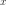,  ,
,  . However, we will not use this
convention.
. However, we will not use this
convention.
Tables¶
Spherical harmonics:
![Y_{0,0}(\theta, \phi) = \frac{1}{2 \sqrt{\pi}}
Y_{1,-1}(\theta, \phi) = \frac{\sqrt{6} e^{- \mathbf{\imath} \phi} \sin{\left (\theta \right )}}{4 \sqrt{\pi}}
Y_{1,0}(\theta, \phi) = \frac{\sqrt{3} \cos{\left (\theta \right )}}{2 \sqrt{\pi}}
Y_{1,1}(\theta, \phi) = - \frac{\sqrt{6} e^{\mathbf{\imath} \phi} \sin{\left (\theta \right )}}{4 \sqrt{\pi}}
Y_{2,-2}(\theta, \phi) = \frac{\sqrt{30} e^{- 2 \mathbf{\imath} \phi} \sin^{2}{\left (\theta \right )}}{8 \sqrt{\pi}}
Y_{2,-1}(\theta, \phi) = \frac{\sqrt{30} e^{- \mathbf{\imath} \phi} \sin{\left (\theta \right )} \cos{\left (\theta \right )}}{4 \sqrt{\pi}}
Y_{2,0}(\theta, \phi) = \frac{\sqrt{5} \left(\frac{3}{2} \cos^{2}{\left (\theta \right )} - \frac{1}{2}\right)}{2 \sqrt{\pi}}
Y_{2,1}(\theta, \phi) = - \frac{\sqrt{30} e^{\mathbf{\imath} \phi} \sin{\left (\theta \right )} \cos{\left (\theta \right )}}{4 \sqrt{\pi}}
Y_{2,2}(\theta, \phi) = \frac{\sqrt{30} e^{2 \mathbf{\imath} \phi} \sin^{2}{\left (\theta \right )}}{8 \sqrt{\pi}}
Y_{3,-3}(\theta, \phi) = \frac{\sqrt{35} e^{- 3 \mathbf{\imath} \phi} \sin^{3}{\left (\theta \right )}}{8 \sqrt{\pi}}
Y_{3,-2}(\theta, \phi) = \frac{\sqrt{210} e^{- 2 \mathbf{\imath} \phi} \sin^{2}{\left (\theta \right )} \cos{\left (\theta \right )}}{8 \sqrt{\pi}}
Y_{3,-1}(\theta, \phi) = - \frac{\sqrt{21} \left(6 \sin^{4}{\left (\theta \right )} - 24 \sin^{2}{\left (\theta \right )} \cos^{2}{\left (\theta \right )}\right) e^{- \mathbf{\imath} \phi}}{48 \sqrt{\pi} \sin{\left (\theta \right )}}
Y_{3,0}(\theta, \phi) = \frac{\sqrt{7} \left(- \frac{3}{2} \sin^{2}{\left (\theta \right )} \cos{\left (\theta \right )} + \cos^{3}{\left (\theta \right )}\right)}{2 \sqrt{\pi}}
Y_{3,1}(\theta, \phi) = - \frac{\sqrt{21} \left(360 \cos^{2}{\left (\theta \right )} -72\right) e^{\mathbf{\imath} \phi} \sin{\left (\theta \right )}}{576 \sqrt{\pi}}
Y_{3,2}(\theta, \phi) = \frac{\sqrt{210} e^{2 \mathbf{\imath} \phi} \sin^{2}{\left (\theta \right )} \cos{\left (\theta \right )}}{8 \sqrt{\pi}}
Y_{3,3}(\theta, \phi) = - \frac{\sqrt{35} e^{3 \mathbf{\imath} \phi} \sin^{3}{\left (\theta \right )}}{8 \sqrt{\pi}}](../_images/math/02aac0e376dfc4348bce0f8045de8d349d01d169.svg)
Real spherical harmonics:
![Z_{0,0}(\theta, \phi) = \frac{1}{2 \sqrt{\pi}}
Z_{1,-1}(\theta, \phi) = - \frac{\sqrt{3} \sin{\left (\phi \right )} \sin{\left (\theta \right )}}{2 \sqrt{\pi}}
Z_{1,0}(\theta, \phi) = \frac{\sqrt{3} \cos{\left (\theta \right )}}{2 \sqrt{\pi}}
Z_{1,1}(\theta, \phi) = - \frac{\sqrt{3} \sin{\left (\theta \right )} \cos{\left (\phi \right )}}{2 \sqrt{\pi}}
Z_{2,-2}(\theta, \phi) = \frac{\sqrt{15} \sin{\left (2 \phi \right )} \sin^{2}{\left (\theta \right )}}{4 \sqrt{\pi}}
Z_{2,-1}(\theta, \phi) = - \frac{\sqrt{15} \sin{\left (\phi \right )} \sin{\left (\theta \right )} \cos{\left (\theta \right )}}{2 \sqrt{\pi}}
Z_{2,0}(\theta, \phi) = \frac{\sqrt{5} \left(\frac{3}{2} \cos^{2}{\left (\theta \right )} - \frac{1}{2}\right)}{2 \sqrt{\pi}}
Z_{2,1}(\theta, \phi) = - \frac{\sqrt{15} \sin{\left (\theta \right )} \cos{\left (\phi \right )} \cos{\left (\theta \right )}}{2 \sqrt{\pi}}
Z_{2,2}(\theta, \phi) = \frac{\sqrt{15} \sin^{2}{\left (\theta \right )} \cos{\left (2 \phi \right )}}{4 \sqrt{\pi}}
Z_{3,-3}(\theta, \phi) = - \frac{\sqrt{70} \sin{\left (3 \phi \right )} \sin^{3}{\left (\theta \right )}}{8 \sqrt{\pi}}
Z_{3,-2}(\theta, \phi) = \frac{\sqrt{105} \sin{\left (2 \phi \right )} \sin^{2}{\left (\theta \right )} \cos{\left (\theta \right )}}{4 \sqrt{\pi}}
Z_{3,-1}(\theta, \phi) = - \frac{\sqrt{42} \left(360 \cos^{2}{\left (\theta \right )} -72\right) \sin{\left (\phi \right )} \sin{\left (\theta \right )}}{576 \sqrt{\pi}}
Z_{3,0}(\theta, \phi) = \frac{\sqrt{7} \left(- \frac{3}{2} \sin^{2}{\left (\theta \right )} \cos{\left (\theta \right )} + \cos^{3}{\left (\theta \right )}\right)}{2 \sqrt{\pi}}
Z_{3,1}(\theta, \phi) = - \frac{\sqrt{42} \left(360 \cos^{2}{\left (\theta \right )} -72\right) \sin{\left (\theta \right )} \cos{\left (\phi \right )}}{576 \sqrt{\pi}}
Z_{3,2}(\theta, \phi) = \frac{\sqrt{105} \sin^{2}{\left (\theta \right )} \cos{\left (2 \phi \right )} \cos{\left (\theta \right )}}{4 \sqrt{\pi}}
Z_{3,3}(\theta, \phi) = - \frac{\sqrt{70} \sin^{3}{\left (\theta \right )} \cos{\left (3 \phi \right )}}{8 \sqrt{\pi}}](../_images/math/a01077e090c5a61d53f56f73da2c36d842bff664.svg)
Real spherical harmonics (using , and , assuming ):
![Z_{0,0}(x, y, z) = \frac{1}{2 \sqrt{\pi}}
Z_{1,-1}(x, y, z) = - \frac{\sqrt{3} y}{2 \sqrt{\pi}}
Z_{1,0}(x, y, z) = \frac{\sqrt{3} z}{2 \sqrt{\pi}}
Z_{1,1}(x, y, z) = - \frac{\sqrt{3} x}{2 \sqrt{\pi}}
Z_{2,-2}(x, y, z) = \frac{\sqrt{15} x y}{2 \sqrt{\pi}}
Z_{2,-1}(x, y, z) = - \frac{\sqrt{15} y z}{2 \sqrt{\pi}}
Z_{2,0}(x, y, z) = \frac{\sqrt{5} \left(3 z^{2} -1\right)}{4 \sqrt{\pi}}
Z_{2,1}(x, y, z) = - \frac{\sqrt{15} x z}{2 \sqrt{\pi}}
Z_{2,2}(x, y, z) = \frac{\sqrt{15} \left(x^{2} - y^{2}\right)}{4 \sqrt{\pi}}
Z_{3,-3}(x, y, z) = \frac{\sqrt{70} y \left(- 3 x^{2} + y^{2}\right)}{8 \sqrt{\pi}}
Z_{3,-2}(x, y, z) = \frac{\sqrt{105} x y z}{2 \sqrt{\pi}}
Z_{3,-1}(x, y, z) = \frac{\sqrt{42} y \left(- 5 z^{2} + 1\right)}{8 \sqrt{\pi}}
Z_{3,0}(x, y, z) = \frac{\sqrt{7} z \left(5 z^{2} -3\right)}{4 \sqrt{\pi}}
Z_{3,1}(x, y, z) = \frac{\sqrt{42} x \left(- 5 z^{2} + 1\right)}{8 \sqrt{\pi}}
Z_{3,2}(x, y, z) = \frac{\sqrt{105} z \left(x^{2} - y^{2}\right)}{4 \sqrt{\pi}}
Z_{3,3}(x, y, z) = \frac{\sqrt{70} x \left(- x^{2} + 3 y^{2}\right)}{8 \sqrt{\pi}}](../_images/math/87dacfbaa8d68618a83dd7bb139adcd725aca1b4.svg)
These tables were generated using
spherical_harmonics.py:
from sympy import (sympify, factorial, var, cos, S, sin, Dummy, sqrt, pi, exp,
I, latex, symbols)
def Plm(l, m, z):
"""
Returns the associated Legendre polynomial P_{lm}(z).
The Condon & Shortley (-1)^m factor is included.
"""
l = sympify(l)
m = sympify(m)
z = sympify(z)
if m >= 0:
r = ((z**2-1)**l).diff(z, l+m)
return (-1)**m * (1-z**2)**(m/2) * r / (2**l * factorial(l))
else:
m = -m
r = ((z**2-1)**l).diff(z, l+m)
return factorial(l-m)/factorial(l+m) * (1-z**2)**(m/2) * r / (2**l * factorial(l))
def Plm_cos(l, m, theta):
"""
Returns the associated Legendre polynomial P_{lm}(cos(theta)).
The Condon & Shortley (-1)^m factor is included.
"""
l = sympify(l)
m = sympify(m)
theta = sympify(theta)
z = Dummy("z")
r = ((z**2-1)**l).diff(z, l+m).subs(z**2-1, -sin(theta)**2).subs(z, cos(theta))
return (-1)**m * sin(theta)**m * r / (2**l * factorial(l))
def Ylm(l, m, theta, phi):
"""
Returns the spherical harmonics Y_{lm}(theta, phi) using the Condon & Shortley convention.
"""
l, m, theta, phi = sympify(l), sympify(m), sympify(theta), sympify(phi)
return sqrt((2*l+1)/(4*pi) * factorial(l-m)/factorial(l+m)) * Plm_cos(l, m, theta) * exp(I*m*phi)
def Zlm(l, m, theta, phi):
"""
Returns the real spherical harmonics Z_{lm}(theta, phi).
"""
l, m, theta, phi = sympify(l), sympify(m), sympify(theta), sympify(phi)
if m > 0:
return sqrt((2*l+1)/(2*pi) * factorial(l-m)/factorial(l+m)) * Plm_cos(l, m, theta) * cos(m*phi)
elif m < 0:
m = -m
return sqrt((2*l+1)/(2*pi) * factorial(l-m)/factorial(l+m)) * Plm_cos(l, m, theta) * sin(m*phi)
elif m == 0:
return sqrt((2*l+1)/(4*pi)) * Plm_cos(l, 0, theta)
else:
raise ValueError("Invalid m.")
def Zlm_xyz(l, m, x, y, z):
"""
Returns the real spherical harmonics Z_{lm}(x, y, z).
It is assumed x**2 + y**2 + z**2 == 1.
"""
l, m, x, y, z = sympify(l), sympify(m), sympify(x), sympify(y), sympify(z)
if m > 0:
r = (x+I*y)**m
r = r.as_real_imag()[0]
return sqrt((2*l+1)/(2*pi) * factorial(l-m)/factorial(l+m)) * Plm(l, m, z) * r / sqrt(1-z**2)**m
elif m < 0:
m = -m
r = (x+I*y)**m
r = r.as_real_imag()[1]
return sqrt((2*l+1)/(2*pi) * factorial(l-m)/factorial(l+m)) * Plm(l, m, z) * r / sqrt(1-z**2)**m
elif m == 0:
return sqrt((2*l+1)/(4*pi)) * Plm(l, 0, z)
else:
raise ValueError("Invalid m.")
var("theta phi")
x, y, z = symbols("x y z", real=True)
print "Spherical harmonics:"
print
print ".. math::"
print
for l in range(4):
for m in range(-l, l+1):
print r" Y_{%d,%d}(\theta, \phi) =" % (l, m), \
latex(Ylm(l, m, theta, phi))
print
print
print "Real spherical harmonics:"
print
print ".. math::"
print
for l in range(4):
for m in range(-l, l+1):
print r" Z_{%d,%d}(\theta, \phi) =" % (l, m), \
latex(Zlm(l, m, theta, phi))
print
print
print "Real spherical harmonics (using $x$, $y$ and $z$, assuming $x^2 + y^2 + z^2 = 1$):"
print
print ".. math::"
print
for l in range(4):
for m in range(-l, l+1):
print r" Z_{%d,%d}(x, y, z) =" % (l, m), \
latex(Zlm_xyz(l, m, x, y, z).simplify())
print